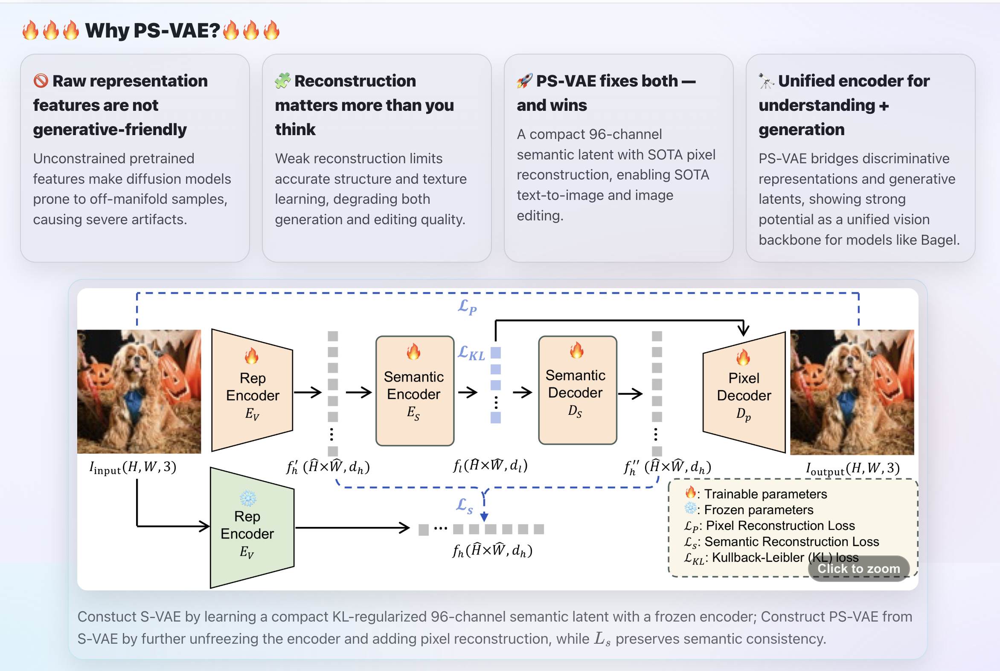

[1] Both Semantics and Reconstruction Matter: Making Representation Encoders Ready for Text-to-Image Generation and Editing
We systematically adapt understanding-oriented encoder features for generation/editing by jointly regularizing semantics and pixel reconstruction, compressing both into a compact 96-channel latent (16×16 downsampling). This points to the potential of a unified encoder that supports understanding + generation/editing within a single model backbone.